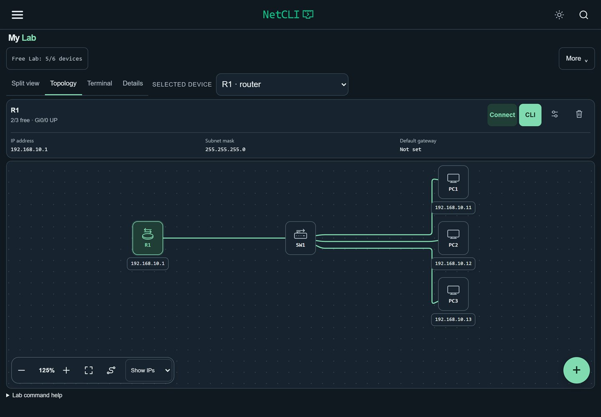

Praktisk nettverkslæring
Bygg nettverket.
Finn feilen.
Koble sammen rutere, svitsjer og PC-er. Bruk Cisco IOS-kommandoer og se hva som skjer i nettverket. NetCLI gir deg en lab å øve i, rett på mobilen.
Prøv en liten feilsøkingsøvelse
01 / I labben
En PC når ikke ruteren.
Du prøver å pinge ruteren, men får ikke svar. Før du endrer IP-adresser eller ruter, sjekk om ruterens grensesnitt er oppe.
Øv på samme arbeidsmåte i NetCLI. Undersøk først, gjør én endring og test på nytt.
R1# show ip interface brief
Interface IP-Address Status Protocol
Gi0/0 192.168.1.1 up up
Gi0/1 192.168.2.1 administratively down downPC-en er på nettverket bak Gi0/1. Administratively down betyr at porten er slått av i konfigurasjonen. Neste steg i labben er å aktivere riktig port med no shutdown og prøve ping på nytt.
Åpne kommandoen for å se eksempelutskriften.
02 / En historie i terminalen
En kjeller i 2003.
En terminal som venter.
The Bloom Protocol er en historie du spiller med Cisco IOS-kommandoer. Undersøk nettverket, prøv en kommando og les svaret før du går videre.
Står du fast? Be om et hint i Bloom-kanalen på Discord.
Ny på serveren? Bli med på NetCLI Discord.


03 / Hjelp og fellesskap
Lær sammen med andre.
Del en lab, finn noen å øve med eller forklar en kommando du nettopp fikk til.